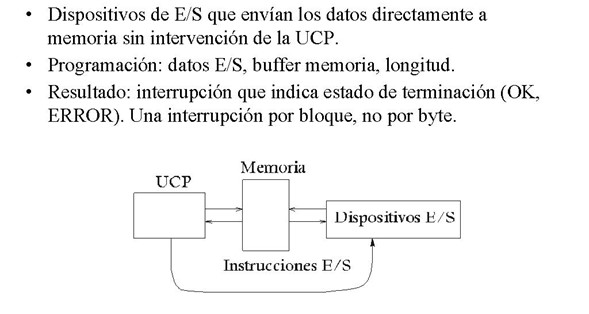

En este apartado describiremos una técnica mucho más eficiente
para transferir bloques de datos, el acceso directo a memoria (DMA). En esta
técnica el procesador programa la transferencia de un bloque de datos
entre el periférico y la memoria encargando a un nuevo elemento
conectado al bus del sistema hacer toda la transferencia. Una vez acabada,
este nuevo elemento avisa el procesador. De esta manera, el procesador puede
dedicar todo el tiempo que dura la transferencia del bloque a otras tareas.
Este nuevo elemento que gestiona toda la transferencia de datos entre el
periférico y la memoria principal lo denominamos módulo o
controlador de DMA o también en versiones más evolucionadas
canal o procesador de E/S.
Utilizando la técnica de E/S por DMA se descarga al procesador de la
responsabilidad de llevar a cabo la sincronización y el intercambio de
datos entre el periférico y la memoria.
Por otra parte, nos aparece una nueva problemática en el computador,
ya que hay dos dispositivos –el procesador y el controlador de DMA– que tienen
que acceder de manera concurrente a la memoria y hay que establecer un mecanismo
para resolver este conflicto.
